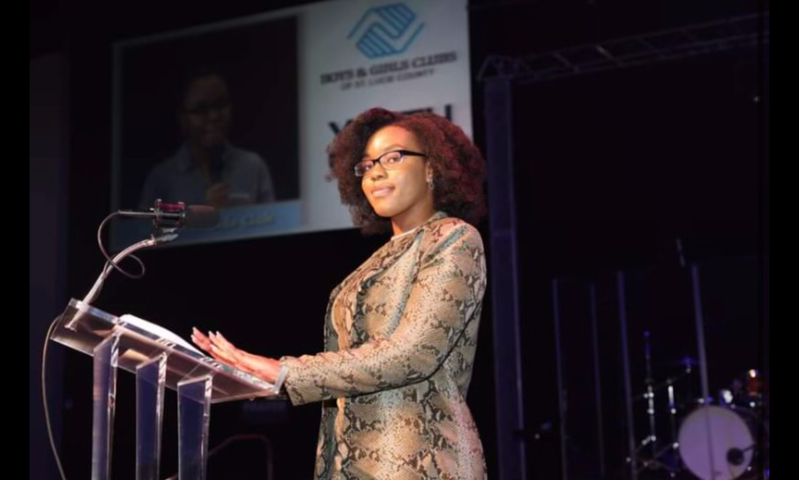

Mia Morrison
Aerospace Engineering Student
Systems Thinker • Technical Leader • Problem Solver
About Me
I am an Aerospace Engineering student at Embry-Riddle Aeronautical University with experience in CAD design, robotics, programming, systems integration, and technical project development.
My passion is systems thinking—understanding how individual components interact within a larger whole and designing solutions that work effectively together from the start.
Beyond engineering, I have led statewide initiatives in leadership development, civic engagement, fundraising, and youth advocacy. These experiences have strengthened my ability to connect technical problem-solving with real-world impact.
Engineering Projects
Pathfinder ADR-01 Autonomous Rover

Designed and built an autonomous obstacle-avoidance rover using Arduino, ultrasonic sensing, electronics integration, and a custom 3D-printed chassis. This self-directed project involved independently learning Arduino programming, embedded systems development, and technical documentation.
View Project
MATLAB Meal Recommendation System

Developed a MATLAB application that generates high-protein, lower-calorie meal recommendations based on meal type, protein preference, and available cooking time using an Excel-based recipe database.
View Project
CATIA Scooter Design Project

Reverse-engineered and modeled an electric scooter assembly using CATIA while creating engineering drawings and technical documentation. This project helped build the CAD skills that contributed to obtaining my first engineering internship.
View Project
Leadership & Impact

Florida Youth of the Year
Two-time Florida Youth of the Year for Boys & Girls Clubs of America, advocating on behalf of mental health awareness and educational resources. Created a college readiness program helping students navigate applications, scholarships, and college enrollment.

Guatemala Service Project
Worked with Habitat for Humanity in Guatemala, using intermediate Spanish to coordinate construction efforts and build a stove for a local family.

NASCAR & Mae Jemison
Served as a youth keynote speaker at a NASCAR business conference and met Dr. Mae Jemison, one of my earliest STEM inspirations.

Faith in Florida
Lead fundraising, donor stewardship, civic engagement, and statewide initiatives while helping coordinate campaigns generating over $100,000 annually.